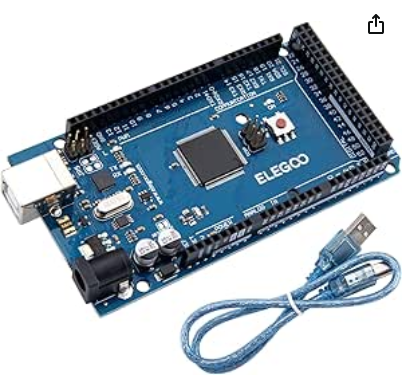

About me
Hello There,Its me Binod poudel a final year mechatronics engineering student at university of central lancashire, This is the report of my project called automated solar powered lawn mower.In this report im talking about the demo version of automatic soalr powered lawn mower which concept can be used to develop fully featured and working model in near future if require
Abstract
The fully automated solar grass mower is a robotic vehicle designed to mow grass without any human intervention. It runs on solar energy, using photovoltaic panels to power the system, and is equipped with obstacle-avoidance capabilities for efficient operation The entire system is controlled by a microcontroller(ELEGOO Mega2560 R3), with automation achieved through the integration of ultrasonic sensor and programming.The mower's movement and grass-cutting functions are powered by DC motors which is controled using the motor driver(L298N), while a DC battery provides backup power and supports standby mode.
Introduction
In today’s world, where technology is advancing alongside a growing emphasis on environmental awareness,
people are actively seeking ways to reduce pollution and embrace sustainable living. Pollution, largely
man-made, affects even the smallest aspects of our daily lives—starting from our own homes.
To address this issue, green technology is being strongly supported by both the government and corporate
businesses. Our Fuel-less Solar-Powered Automatic Lawn Mower is designed to replace outdated and
environmentally harmful habits, benefiting both consumers and the planet.
The main purpose of our project is to cut the grass without the need of human.In this demo i have used a
solar panel to charge the DC battery
so there is no need to replace the battery again and again instead it will get charged and mow the lawn at
the same time.When there is no human involed the
machine must be capable of avoiding the obstacle that comes infront of the machine so for that i have used
the ultrasonic sensor which will detect the obstacle
and change the direction accordingly and to change the direction i have used the dc motor which is connected
to motor driver where the power supply required by motor to function is connected.
In this project i have used two batteries one for the arduino and another for the motar driver
Objectives
Sustainable Lawn Care:The main goal of this project is to create a lawnmower that runs on solar power, making it environmentally friendly. By using solar energy instead of gas, the mower helps reduce pollution and the need for traditional energy sources, making lawn care more sustainable and green.
Fully Automated Operation:The project aims to design a robot that can mow the lawn on its own, without needing constant attention from the user. The mower should work by itself, saving time and effort, and making the whole lawn care process more convenient
Smart Navigation and Obstacle Avoidance:The mower needs to be able to move around the lawn and avoid things like trees, rocks, or furniture. With the help of sensors, it will detect obstacles and change its path to avoid them. This will make sure the mower doesn’t damage itself or anything else in the garden, ensuring smooth and safe operation.
Literature Review
The development of solar-powered and autonomous lawnmowers has become more popular in recent years. Many studies and existing products have focused on making lawnmowers smarter, more energy-efficient, and environmentally friendly.
- Solar-Powered Lawn Mowers
- solar energy has been widely recognized as a sustainable and clean energy source. According to Smith et al. (2019), using solar panels on devices like robotic mowers can significantly reduce carbon emissions and running costs. The idea is simple but effective: the mower uses sunlight to charge its battery, making it independent of traditional power sources.
- Obstacle Detection and Navigation
- Johnson and Wang (2021) explored how sensors like ultrasonic and infrared can help robots detect objects in their path. These sensors are affordable and reliable, making them ideal for a project like this. Other researchers, such as Lee and Park (2020), have shown how more advanced technologies like LIDAR can provide even better precision, though at a higher cost.
- Commercial Robotic Lawn Mowers
- Several companies, such as Husqvarna and Robomow, have already developed robotic mowers that can cut grass autonomously. However, Williams et al. (2017) pointed out that most of these rely on boundary wires or GPS systems for navigation and don’t use solar power. Adding solar panels to such systems could make them even more cost-effective and sustainable.
Methodolody
To build the solar-powered lawn mower, I focused on a step-by-step process to ensure smooth progress and functionality of the final product. While the design itself is simple, I prioritized functionality and efficiency during development.
Component Selection
I chose components that were practical and cost-effective. The primary components used include:
Solar Panel: To capture sunlight and provide energy for the system.

DC Motors: For driving the wheels and operating the cutting blade.
Ultrasonic Sensors: For detecting obstacles and ensuring safe navigation.

Arduino Microcontroller: To control the mower’s operations.
Motor Driver: To interface the motors with the Arduino and regulate power supply.

Battery: To store solar energy for continuous operation.
Coding and Testing
I wrote the Arduino code step by step to control the mower’s functions, like the motor, obstacle detection, and navigation. First, I tested each feature on its own, like making sure the motor moved correctly and checking the sensor readings. Then, I combined these features into one program. I tested everything multiple times, making changes after each test to make it work better.
#include Servo.h
#include NewPing.h
//our L298N control pins
const int LeftMotorForward = 5;
const int LeftMotorBackward = 4;
const int RightMotorForward = 3;
const int RightMotorBackward = 2;
//sensor pins
#define trig_pin A3 //analog input 1
#define echo_pin A2 //analog input 2
#define maximum_distance 200
boolean goesForward = false;
int distance = 100;
NewPing sonar(trig_pin, echo_pin, maximum_distance); //sensor function
Servo servo_motor; //our servo name
void setup(){
pinMode(RightMotorForward, OUTPUT);
pinMode(LeftMotorForward, OUTPUT);
pinMode(LeftMotorBackward, OUTPUT);
pinMode(RightMotorBackward, OUTPUT);
servo_motor.attach(11); //our servo pin
servo_motor.write(90);
delay(2000);
distance = readPing();
delay(100);
distance = readPing();
delay(100);
distance = readPing();
delay(100);
distance = readPing();
delay(100);
}
void loop(){
int distanceRight = 0;
int distanceLeft = 0;
delay(50);
if (distance <= 20){
moveStop();
delay(300);
moveBackward();
delay(400);
moveStop();
delay(300);
distanceRight = lookRight();
delay(300);
distanceLeft = lookLeft();
delay(300);
if (distance >= distanceLeft){
turnRight();
moveStop();
}
else{
turnLeft();
moveStop();
}
}
else{
moveForward();
}
distance = readPing();
}
int lookRight(){
servo_motor.write(10);
delay(500);
int distance = readPing();
delay(100);
servo_motor.write(90);
return distance;
}
int lookLeft(){
servo_motor.write(170);
delay(500);
int distance = readPing();
delay(100);
servo_motor.write(90);
return distance;
delay(100);
}
int readPing(){
delay(70);
int cm = sonar.ping_cm();
if (cm==0){
cm=250;
}
return cm;
}
void moveStop(){
digitalWrite(RightMotorForward, LOW);
digitalWrite(LeftMotorForward, LOW);
digitalWrite(RightMotorBackward, LOW);
digitalWrite(LeftMotorBackward, LOW);
}
void moveForward(){
if(!goesForward){
goesForward=true;
digitalWrite(LeftMotorForward, HIGH);
digitalWrite(RightMotorForward, HIGH);
digitalWrite(LeftMotorBackward, LOW);
digitalWrite(RightMotorBackward, LOW);
}
}
void moveBackward(){
goesForward=false;
digitalWrite(LeftMotorBackward, HIGH);
digitalWrite(RightMotorBackward, HIGH);
digitalWrite(LeftMotorForward, LOW);
digitalWrite(RightMotorForward, LOW);
}
void turnRight(){
digitalWrite(LeftMotorForward, HIGH);
digitalWrite(RightMotorBackward, HIGH);
digitalWrite(LeftMotorBackward, LOW);
digitalWrite(RightMotorForward, LOW);
delay(500);
digitalWrite(LeftMotorForward, HIGH);
digitalWrite(RightMotorForward, HIGH);
digitalWrite(LeftMotorBackward, LOW);
digitalWrite(RightMotorBackward, LOW);
}
void turnLeft(){
digitalWrite(LeftMotorBackward, HIGH);
digitalWrite(RightMotorForward, HIGH);
digitalWrite(LeftMotorForward, LOW);
digitalWrite(RightMotorBackward, LOW);
delay(500);
digitalWrite(LeftMotorForward, HIGH);
digitalWrite(RightMotorForward, HIGH);
digitalWrite(LeftMotorBackward, LOW);
digitalWrite(RightMotorBackward, LOW);
}
Integration and Adjustment
once all components were functioning independently, I integrated them into the complete system. I tested the mower in controlled conditions to optimize parameters such as motor speed, sensor range, and navigation logic. During this phase, I ensured the mower could operate efficiently under various conditions, including different lighting levels for solar charging.
Circuit Connection
Charging battery using solar panel

Normally,when charging the battery using solar panel the safest method to charge is using the charging controller/charging module but in my case i kept it very simple and directly connected the panel with battery because the pannel is of the 10 watt and 12v and my battery is of same capacity but still charging module is recommended for safer charging .
servo motor and arduino

The servo motor has 3 wires:
Orange-PWM(input)
Red - 5v
Brown - Ground
To connect the pins of servo motor with arduino i have used the jumper wire.Where the orange wire is connected to digital pin 11 in arduino and the brown wire is connected to the ground pin and the red wire is connected in 5v pin in arduino
Ultrasonic senor connection with arduino

Ultrasonic sensor has 4 pin in it:
Vcc - 3.3v
Trig - analog pin A3
Echo - analog pin A2
Gnd - Ground
In arduino i have have connect the Vcc of ultrasonic sensor with 3.3v pin for the power source and the trig to the analog pin A3 and echo to the analog pin A2 and the ground one to the ground pin in arduino
Motor driver and Arduino

i have used L298N motor driver which can only control 2 motors which i have used to control the wheel of robot and for power supply i have supply the +12v pin with live wire from battery and the ground wire in ground pin and along with it i have connected one ground from arduino to the motor driver ground and there is 4 pin in motor driver called N1,N2,N3,N4 which i have connected to arduino digital pin 5,4,3,2 respectively.And there is another +5v pin too in motor driver from where we can pass power to Arduino but i have choose to use seperate powersource for each so i left that pin empty
lawn mowing 3500 RPM motor connection
I have connected this motor directly to 12v battery as it require 12v to operate
Working
The automated solar grass cutter system is powered by two separate power sources. The Arduino Mega runs on a 9V battery, which controls the movement of the mower through DC motors connected to a motor driver powered by a 12V battery. The cutting blade is powered separately and continuously rotates, directly connected to the same 12V battery, without any link to the Arduino. Ultrasonic sensors help detect obstacles, and the Arduino uses this information to adjust the mower’s direction, avoiding collisions. This system combines smart navigation with solar energy to offer an efficient and eco-friendly solution for cutting grass.
Problem Faced
While working on the solar-powered grass cutter robot, I encountered several issues with the power system and overall design.
First, I selected a 12.8V 12Ah LiFePO4 lithium battery. Although this battery provided sufficient voltage, it turned out to be too heavy for the robot's design. The weight of the battery, combined with the motor for the cutting blade, made it harder to keep the robot balanced and moving smoothly. The motor requires a lot of power, and since it’s also heavy, it added more strain to the system, making the robot harder to move.
Additionally, the solar panel I chose was also fairly heavy, adding to the overall weight. The combination of the battery, motor, and solar panel made it difficult for the robot to function properly.
Another issue was that I had to charge the battery directly without a proper charging module to connect it to the solar panel. This setup can be unsafe for long-term use, as the battery could be overcharged or damaged without a proper charging system. It also meant the robot didn’t have a reliable way to stay powered for long periods.
Finally, I didn’t have the tools needed to build the robot’s chassis properly. The chassis is important to hold everything together and ensure the robot moves efficiently. However, due to the weight and power issues, along with the lack of proper tools, I wasn’t able to create a stable and functional chassis.
These challenges made it difficult to get the robot working as planned and highlighted the importance of balancing power, weight, and design when building such a system.
Conclusion
To sum up, building the solar-powered grass cutter robot had its challenges, but it was a great learning experience. The idea of using renewable energy to power the robot seemed like a good one, but problems with the choice of parts, especially the battery, motor, and solar panel, made it harder for the robot to work well. The heavy weight and high power needs of these parts made it tough to balance the robot and keep it moving smoothly.
On top of that, the limited tools for building and assembling the chassis and component made things even harder.Even with these challenges, the project taught me how important it is to plan carefully and find the right balance when designing complex systems.
In the future, making some changes in components and improving the design will be key to making the robot work better and , this project could still become a successful example of using sustainable technology in robotics.